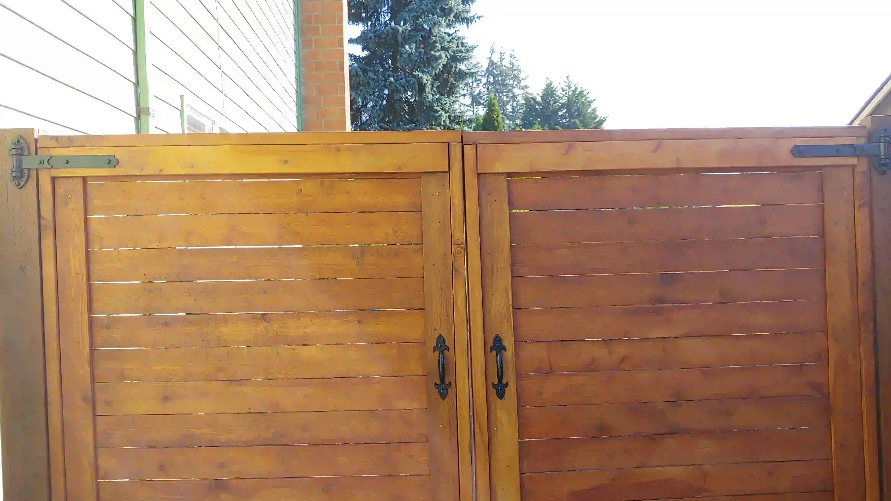
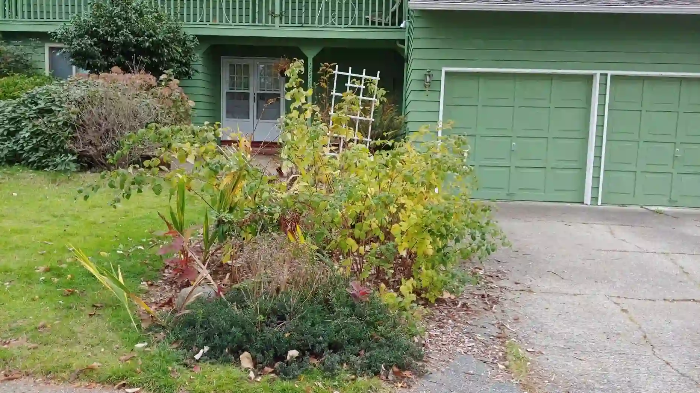

Back Yard
- Gates
- Planter Boxes
- Cherry tree
- Hammocks
Finished Projects
Front
The impression a house makes when you first see it is called curb appeal.
The first project I want to work on is putting in a walk way to the front door. I think this would look nice. I can also weed the front flowerbeds while I am at it.
